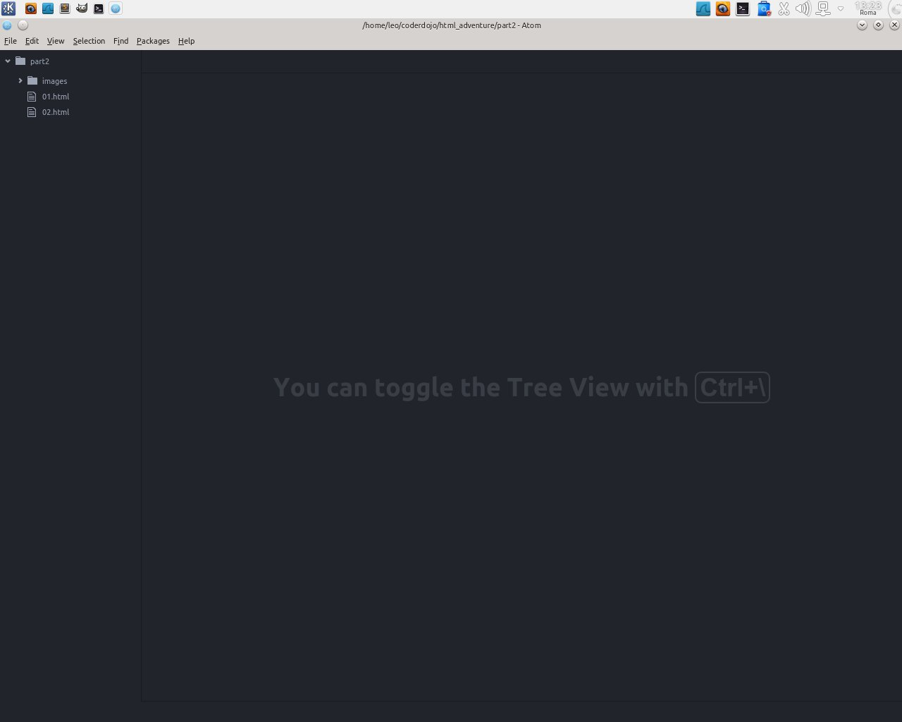

Nel primo esercizio abbiamo incontrato l'HTML, il "linguaggio a marcatori per gli ipertesti". Urca, urca, attenzione. Beh, linguaggio abbiamo capito cosa significa, in pratica è un insieme astruso di parole e simboli che fanno fare qualcosa al computer. I marcatori sono proprio gli elementi del linguaggio, i tag, quei nomi strani circondati dalle parentesi appuntite. Ma questi ipertesti? Niente di complesso, li usiamo tutti i giorni. Gli ipertesti sono dei testi collegati tra loro. Avete presente quando cliccate un link su Internet? Link per l'appunto significa collegamento ed ecco fatto! Tutta Internet è un gigantesco ipertesto.
Ma come si fanno i link? Facciamone subito uno, così impariamo in quattro e quattr'otto. Ma prima... un po' di pulizia!
Chiudiamo le varie tab che abbiamo aperto, sia quella con l'anteprima che quella con il file HTML.
In alto, sotto la barra dei menu, ci sono due linguette. Una con il nome index.html e l'altra con il testo Un'avventura testuale (che è il titolo della pagina nell'anteprima). Se vai con il mouse sulla linguetta comparirà una piccola croce. Premila e la linguetta si chiuderà. Chiudile entrambe. Poi nella barra a sinistra clicca sulla directory part1 con il tasto destro e seleziona Remove Project Folder.
Ora la finestra dell'editor è totalmente vuota. Adesso, per continuare nel lavoro di oggi, devi aprire un progetto, ovvero un insieme di file che abbiamo già preparato per te, giusto per evitarti di dover passare la giornata a scrivere nell'editor! Siamo o non siamo bravi?
Clicca sul menu Packages e scegli Project Manager > List Projects. Poi nel menu che si apre seleziona "HTML Adventure Part 2". Vedrai comparire a sinistra una serie file che useremo. Ecco come si presenterà l'editor.

Bene, torniamo ai nostri link. Apriamo il file 01.html.
Nella barra a sinistra dell'editor clicca una volta sul file 01.html
Come vedi è molto simile al file su cui abbiamo lavorato nel primo esercizio, solo che qui c'è un po' più di testo. Leggi pure il testo, così cominciamo ad immedesimarci: come vedi in questo gioco il lettore veste i panni di un agente segreto. Vorremmo che alla fine di questo testo il lettore/giocatore possa muoversi verso un'altra pagina, facendo procedere la storia. Quest'altra parte della storia è nel file 02.html
Nella barra a sinistra dell'editor clicca una volta sul file 02.html
Adesso dobbiamo inserire un nuovo tag, che si chiama a (e sta per anchor, àncora, come quella della nave). Questo tag crea un link: contiene l'indirizzo della pagina a cui porta il link e un testo che viene inserito nella pagina. Risulterà una cosa così
[...]
<a href="02.html">Vai avanti</a>
</body>
[...]
Ricordati che esiste l'autocompletamento, scrivi a, premi TAB e trovi gran parte del lavoro fatto!
Aggiungi alla fine del file 01.html (attenzione, prima del tag </body>) il codice <a href="02.html">Vai avanti</a>
Riattiva l'anteprima (tasto destro del mouse, poi seleziona Preview-Plus dal menu). Cosa è successo nella pagina? È spuntato fuori un link, e quando lo clicchi... zac! Eccoci alla pagina 02.html! Mmmmm, ne siamo sicuri? Beh, controlliamo nel file 02.html che abbiamo già aperto... sembra proprio lui, no?
Accidenti, c'è un problema! Come facciamo a tornare alla pagina 1? La pagina 2 non contiene alcun link, ci siamo persi nella foresta di Internet! Aiuuuuuutooooo!
Calma, calma. Noi sappiamo come fare un link, no?
Inserisci nella pagina 2 un link alla pagina 1, esattamente come abbiamo fatto prima. Attenzione ad inserire il link prima del tag di chiusura </body>. Suggerimento: copia il tag dal file 01.html e cambia le parti necessarie.
Ricordati che l'anteprima non si aggiorna automaticamente a meno che non sia attivo il simbolino del fulmine. Come vedi quando si tratta di link l'anteprima nell'editor non funziona perfettamente, quindi sarà meglio tornare al browser vero e proprio.
Nel browser dove stai leggendo questo tutorial, nella barra dei segnalibri, trovi HTML Adventure e dentro c'è Parte 2. Clicca con il tasto destro e seleziona Apri in una nuova scheda. Ricordati che qui per vedere le prossime modifiche che salverai dovrai premere F5.
Ottimo, ora possiamo andare avanti e indietro tra le nostre due pagine!
Ma... mettiamo che da una pagina ci siano più possibilità di scelta su dove andare. È possibile mettere due link, ad esempio?
Metti nella pagina 01.html un link alla pagina 03.html con il testo "Vai in fondo". Cosa succede? È possibile metterlo su due righe diverse, per esempio mandando a capo il tag?
Come hai visto anche se metti i tag <a> su righe diverse l'HTML se ne infischia e li mette uno dietro l'altro! Le uniche cose che stanno su due righe diverse in HTML sono i paragrafi (quelli che abbiamo già fatto con il tag <p>). Quindi se fosse possibile mettere un link dentro un paragrafo... È possibile mettere un tag dentro l'altro? Per esempio una cosa così
<p><a href="02.html">Vai avanti</a></p> <p><a href="03.html">Vai in fondo</a></p>
L'idea è che ogni paragrafo contiene un link. Beh, proviamo a vedere se funziona!
Prova a mettere il tag <a> dentro un tag <p> come mostrato qui sopra. Attenzione i due tag <p> e </p> devono contenere completamente i due tag <a> e </a>!
Controlla un po' sul browser cosa succede (ricordati F5)... eccoli! I link adesso sono su due righe diverse, perfetto! Quello che abbiamo fatto si chiama annidare i tag, ovvero metterli uno dentro l'altro, perché il tag esterno diventa come un nido per quello interno (certo che questi programmatori sono gente veramente strana).
Una cosa molto comoda da avere quando si scrivono i testi sono le liste e nel Web ci sono liste ovunque, anche se spesso non ce ne accorgiamo. Ad esempio i menu delle pagine come Facebook o Google, i pulsanti in alto, tutte le mail che ci sono nella casella di posta... tutte liste!
Cominciamo a vedere una semplice lista. Il tag HTML che useremo è <ul>, dentro il quale metteremo dei tag <li>. Per esempio
<ul> <li>Elemento 1</li> <li>Elemento 2</li> </ul>
Proviamo a scriverlo e vediamo cosa viene fuori!
Inserisci il codice qui sopra nella pagina 01-html e verifica cosa produce nell'anteprima o nel browser.
Come vedi la lista produce un cosiddetto "elenco puntato", infatti ul sta per unordered list (lista non ordinata), chiamata così perché gli elementi non hanno un ordine particolare. Cosa succede se utilizziamo il tag <ol> invece di <ul>?
Sostituisci nella tua lista i tag <ul> con i tag <ol>. Attenzione, sia quelli di apertura che quelli di chiusura!
Bene, come vedi ol sta per ordered list (lista ordinata). A prescindere dal tipo di lista gli elementi interni sono sempre contenuti nei tag <li>. Ma dentro la lista ci può stare qualsiasi cosa? Proviamo un po' ad esempio, a metterci i nostri link.
Apri il file 01.html, crea una lista non ordinata e dentro la lista metti i due link creati precedentemente. Un suggerimento: ogni elemento della lista sta dentro i tag <li> e ogni link sta dentro il tag <a>. Non ti servono più i tag <p>! Salva e verifica cosa succede.
Vediamo, alla fine dovrebbe esserti venuta una cosa così
<ul> <li><a href="02.html">Vai avanti</a></li> <li><a href="03.html">Vai in fondo</a></li> </ul>
Adesso i link sono in una bella lista, ognuno su una riga. Per ora ci fermiamo qui con le liste, ma come ti abbiamo detto ne vedremo ancora tantissime. Dovrai aspettare di imparare il libguaggio CSS, però, per imparare a fare veramente delle cose eccezionali con le liste.
Sarebbe ora di rendere la cosa un po' più bellina graficamente, non ti pare? Aggiungiamo un'immagine! Ne abbiamo preparata una bellissima che si trova nella cartella images dentro la cartella part2 del progetto, si chiama adventure.jpg. Atom permette anche di vedere le immagini, quindi se ci clicchi sopra puoi ammirarla subito.
Vai in Atom e sulla barra a sinistra apri la cartela images e clicca sul file adventure.jpg.
Dovrebbe essere questa
Per inserirla nalla pagina Web usiamo il tag <img>. Questo è un tag un po' particolare. Ti abbiamo detto prima che tutti i tag HTML vanno aperti e chiusi per poterci mettere dentro un contenuto. Beh ecco, non era proprio tutta tutta la verità.
Il tag img va aperto e chiuso come tutti, ma non ci si mette dentro nulla come contenuto! Il file che contiene l'immagine si mette in quello che si chiama attributo, in particolare l'attributo src. Allora, facciamo un passo alla volta
Nella pagina 01.html metti dopo la chiusura del tag h1 il codice <img src="images/adventure.jpg" />
Bene, quello che inizia con src= è l'attributo src che sta per source, sorgente, ovvero da dove prendere l'immagine. Gli attributi sono come delle caratteristiche aggiuntive dei tag e sono importantissimi! Ma questo tag img ha un'altra particolarità: invece di terminare con > termina con />. Questo perché è un tag vuoto, ovvero andrebbe scritto così
<img src="images/adventure.jpg"></img>
ma l'HTML ci permette di accorciare la scrittura. Siccome tra <img> e </img> non c'è nulla possiamo fare tutto con <img />. Un po' come scrivere "ecc" invece di "eccetera". Adesso la nostra pagina si dovrebbe presentare così (a parte i vari link e le liste che hai aggiunto prima)
Siamo arrivati alla fine anche della seconda parte!!! Beh, allora che ne dici, stiamo imparando delle cose nuove? E devi vedere cosa ci aspetta! Per adesso facciamo un mini riassunto di cosa è successo finora. In questa lezione abbiamo imparato
<img> è un furbacchione che si comporta diversamente dagli altri, ma ci permette di inserire delle immagini